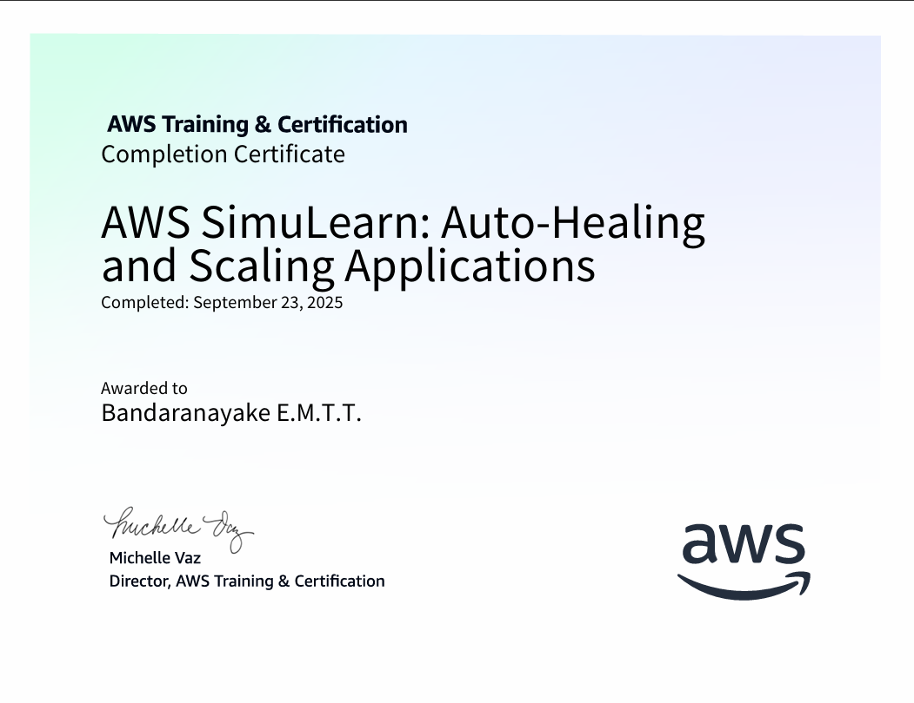
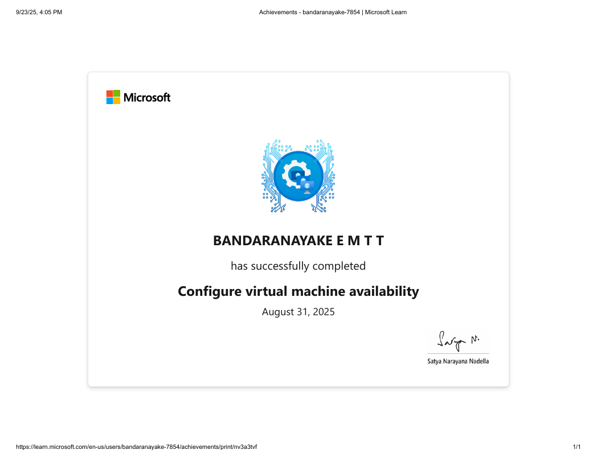

Final Year · BSc (Hons) Information Technology
Full-Stack Developer · SLIIT
I'm a final-year Information Technology student at SLIIT with a background that spans two worlds, technology and business. Before I wrote a line of code professionally, I was out in the field running sales campaigns, training teams and building client relationships. That foundation gives me something most engineers don't have. I understand people as well as I understand systems.
During my internship at CEAT Kelani Holdings, I built full-stack mobile applications using Flutter, Node.js and MySQL, deployed on Azure and led cybersecurity training programmes for non-technical staff across the organization. I don't just build software. I communicate its value to the people who use it.
Goal - Bring together technical depth and real-world communication skills to become a software engineer who builds solutions people understand and trust.
Module structure · Assessments · Expectations
The first session was an overview of the entire PPW module including what it covers, how it is assessed and what we are expected to gain from it. We found out the module has no written exam and is fully assessed through a quiz (20%), a portfolio (50%) and a mock interview (30%).
I came in thinking this would be an easy, relaxed module. By the end of the session, the portfolio and interview requirements made me sit up straight realizing that this was going to take real effort.
The introduction was helpful because it removed all uncertainty about what we needed to do. What stood out negatively was how unprepared I felt thinking about building a portfolio from scratch.
The assessments being all performance-based reflects what employers actually want. They care how you present yourself, not just what you can memorize.
PPW is not a background module. It is directly linked to how ready I am for the working world.
I made a note to stay on top of every session and not let the portfolio pile up. Starting early was the one decision I knew I had to make right away.
Structure · Signposting · Body language · Slide design
We learned how to plan and deliver a well-structured presentation. The session covered the three-part structure, signposting phrases, proper slide design and how to use body language, covering eye contact, voice, posture, expression and appearance.
I actually enjoy presenting, so this session was fun for me. But I realised I had been picking up bad habits, including too many words on slides and not enough pausing to let points land.
Signposting phrases were the highlight. Having ready-made transitions makes a presentation flow smoothly and gives the speaker real confidence. I had been breaking most slide design rules without knowing.
Good presentations are not about talent. They are about structure and preparation. My past presentations that went well were the ones I had rehearsed and the bad ones were the ones I had not.
The audience remembers the ending most. A weak conclusion undoes a good presentation, so it needs the same care as the opening.
I will always write a conclusion slide and rehearse it separately. I will cut my slides down to key words only and time myself during practice runs.
Formal vocabulary · Letter format · Conciseness
The session introduced professional business writing and formal letters, including the use of formal vocabulary, avoiding contractions, writing concisely and structuring letters such as complaints, apologies, invitations and job applications correctly.
I found this more interesting than expected. Seeing how small word choices, like 'obtain' versus 'get', completely change the feel of a sentence was genuinely eye-opening.
The hands-on rewriting activity was the best part. It forced me to think critically about language rather than just reading theory. The formal letter formats were straightforward once the structure was laid out clearly.
Most of my written communication had been casual, mainly consisting of texts, social media, informal emails. Realizing that professional writing requires a completely different mindset was an important shift.
Business writing is really about the reader, keeping it clear, respectful and purposeful. There is no room for filler words or vague language in a professional setting.
I will proofread every professional email using a simple checklist, ensuring a formal tone, clear purpose and a polite closing before hitting send.
Netiquette · Email structure · TO/FROM/DATE/SUBJECT
We went deeper into professional communication. Formal email structure including subject lines, openings, body phrases, closings and internal memo writing using the TO/FROM/DATE/SUBJECT format.
This session hit close to home because I use email constantly. Realizing I had been writing sloppy professional emails with missing subject lines, casual greetings was uncomfortable but very motivating to fix.
The practical email phrases were the most useful takeaway. A bank of professional openers and closers removes the awkwardness of staring at a blank email. Memo writing was new and the format is refreshingly efficient.
Emails create a written record of everything you say. Every email is essentially a professional document. I had not been treating them that way, which could have caused real problems in a workplace.
Netiquette, including prompt replies, clear subject lines and a professional tone, is the foundation of being taken seriously in any professional environment.
I will set up a proper email signature immediately and make it a habit to write a specific subject line before I write anything else in an email.
Introduction · Purpose · Conclusion · Tone of voice
The session focused on professional telephone communication. The three-part structure of a business call (introduction, purpose, conclusion), tone of voice, clarity, active listening and handling common situations like transferring calls or taking messages.
I had never thought of phone skills as something requiring formal training. But when I honestly assessed my own phone manner, I realised I speak too fast and don't always sound confident enough.
Learning that tone of voice carries the entire burden of communication on a phone call, since body language is invisible, was the most valuable point. The do's and don'ts were practical and immediately usable.
A single unprofessional phone call can affect an organisation's reputation. It is not about being formal for formality's sake. It is about building trust consistently.
A professional phone call needs the same intention as a written document. Being clear, calm and helpful over the phone is a skill worth deliberately practising.
I will work on slowing down my speaking pace and using a warmer, more energised tone. I will also practise a standard opening line so I always sound confident from the first word.
Information · Research · Proposal · Groan Factor
We covered the purpose, structure and types of professional reports, including information, research and proposal, walking through key components like the executive summary, introduction, body sections and bibliography, plus the 'GROAN FACTOR' concept.
Report writing has always felt heavy and dull to me, but this session genuinely changed that. Thinking of a report as something designed to serve the reader, not just tick a box, made it feel more meaningful.
The 'It is all about the reader' mindset was a game changer. The advice to write the executive summary last but place it first was something I had never heard before and makes complete logical sense.
I had been writing reports by dumping everything I know onto the page. That approach ignores the reader entirely, which explains why my reports sometimes felt unfocused and too long.
Always define your purpose and audience before writing a single word. A short, well-structured report will always outperform a long, disorganised one.
For my next report, I will plan the structure first, write the body and only then write the executive summary. I will also get someone to review the flow before I submit.
Interview types · STAR method · Non-verbal communication
The final session covered different interview types including in-person, panel, behavioural, technical, case study and virtual, along with what employers look for, non-verbal communication skills and how to answer common questions effectively. We ended with a mock interview.
I feel fairly comfortable in interviews compared to most people, but this session still taught me things I did not know. I was particularly surprised by how much non-verbal communication affects the interviewer's impression.
The STAR method for answering behavioural questions was the standout takeaway. It gives a clear, logical framework that prevents rambling and keeps answers focused. The mock interview was a great reality check.
I used to think interviews were about having the right answers. Now I understand they are about showing the right fit for the role, the team and the organisation's culture. That shift makes preparation feel far more purposeful.
Every part of an interview can be prepared for in advance including your answers, your body language, even the questions you ask the interviewer. Nothing needs to be left to chance.
I will prepare STAR-format answers for the ten most common interview questions and practise them out loud. I will also prepare two thoughtful questions to ask at the end of every interview.
Seven sessions in and PPW genuinely surprised me. I came in expecting the easiest module of the semester. I'm leaving it with a clearer sense of how to carry myself professionally in writing, in conversation and in person.
Technical skills get you to the interview room. Communication skills are what get you the job. PPW gave me the tools to make sure my skills are actually seen and I plan to keep using them long after this module ends.
From where I am now to where I am meant to become.
Complete my final semester at SLIIT and graduate with my BSc (Hons) in Information Technology. Currently maintaining a GPA of 3.09, with focused effort across my final-year projects and assessments.
Apply to full-stack and mobile development positions, leveraging my internship experience and project portfolio. Target employment within six months of graduation with a focus on Flutter and Node.js roles.
Advance my Flutter and cross-platform mobile skills beyond the internship foundation. Publish at least one personal project to app stores to build a public-facing technical portfolio.
Having already completed AWS and Azure certifications during my studies, the focus over the next two years is to apply this knowledge in real-world production settings and growing into a more senior cloud engineering role within a professional setting.
Transition into a lead role, taking ownership of architecture, mentoring junior engineers and bridging technical work with business outcomes. My background in sales and stakeholder management gives me an edge here that pure engineers rarely have.
Technical professional with strong analytical and problem-solving skills, seeking to leverage programming expertise and data-driven insights to develop innovative software solutions and drive digital transformation initiatives.
Platform - AWS Skill Builder

Platform - Azure Student
